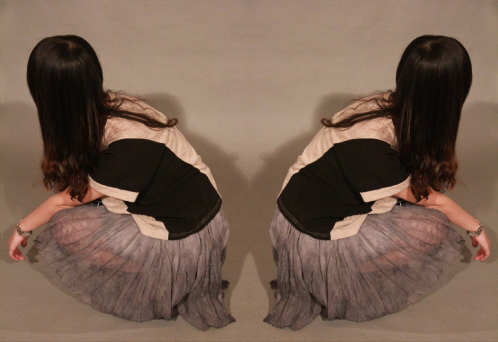
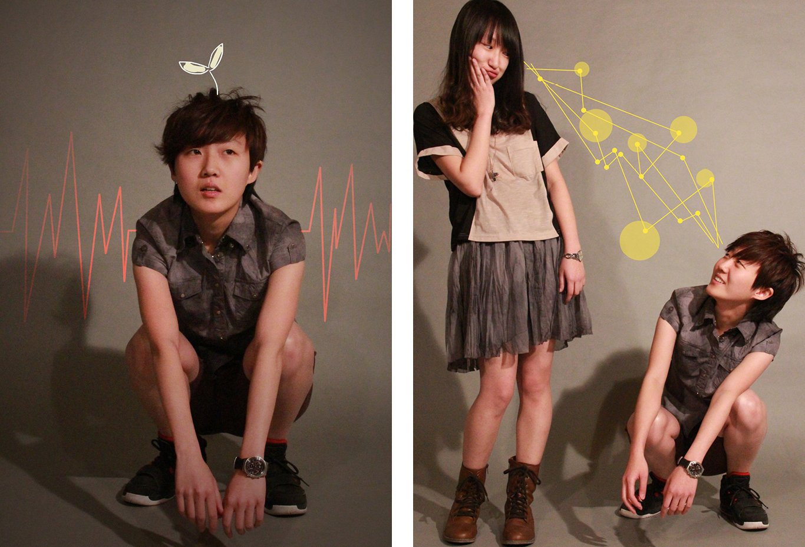
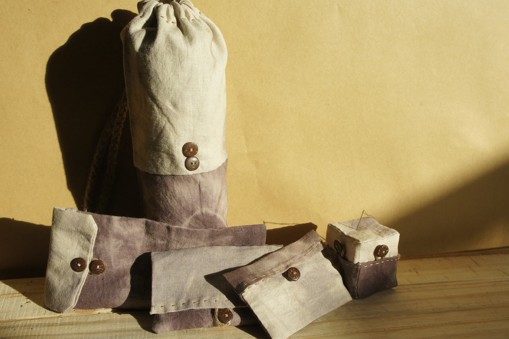
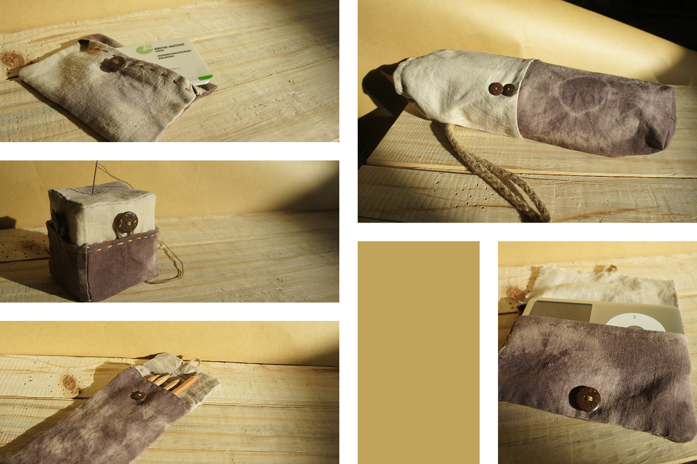
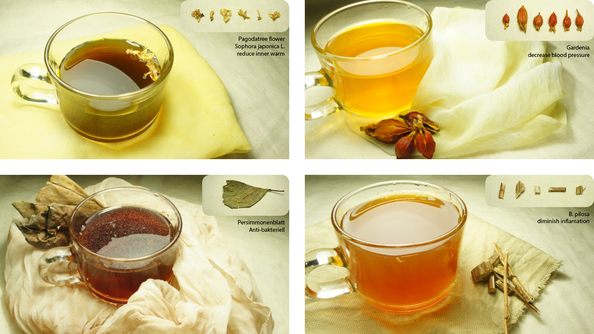
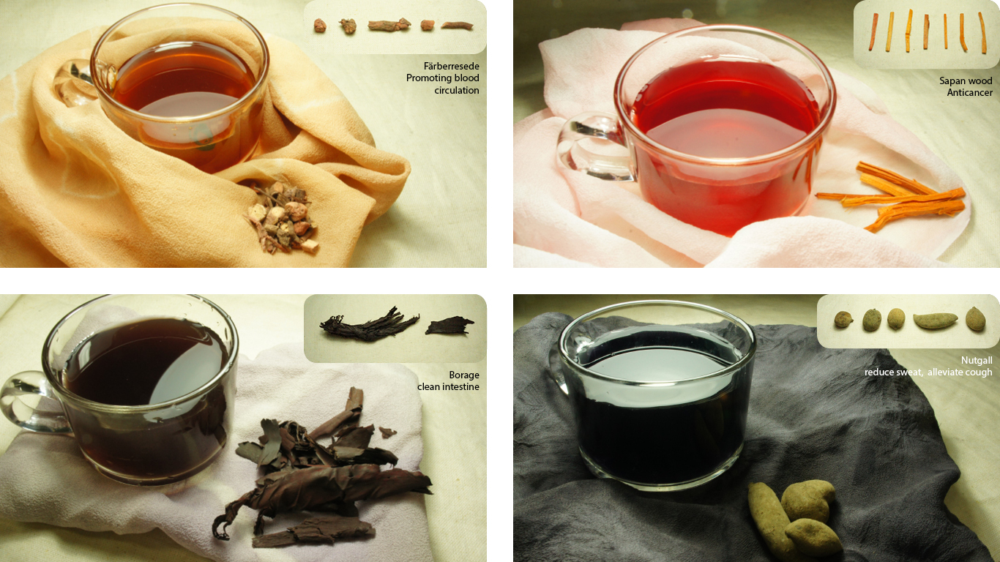
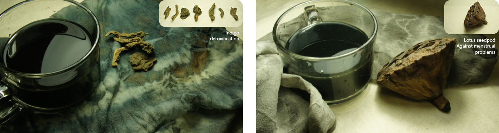

Yin Yun -
Plant Dye
Teamwork: Bihong Tang, Ningyuan Xu
Material: Chinese plant medicine, dyeing, sewing
“Yin Yun” is a eco-frendly experiment. In this project We tried to redesign clothes and accessories out of recycled materials, dye with natural plant’s extraction, so the color extraction is also recycled from the nature. The goal is, to solve the waste-pollution with design-thinking, to extend the lifespan of a product, and to awoke the awareness of culture, history and nature, on which we should have taken more attention. The name “Yin Yun” expresses the dynamic dye-process.

Redesign Recycled Clothes


Accessories


Plant Dye Catalogue


